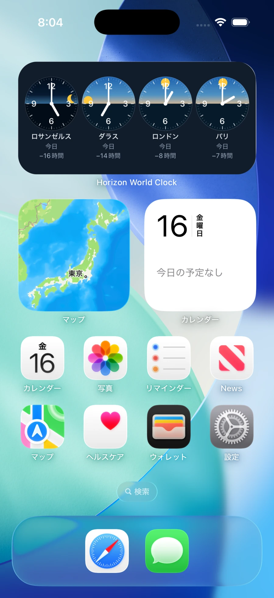

日の出・日の入りと世界時計
リアルタイムの日の出・日の入りアニメーション付き世界時計
街ごとの日の出・日の入りに合わせて、文字盤の太陽が動きます。ウィジェットを追加して、好きな街を好きな数だけ。
現在の世界時刻
- ロサンゼルス —
- ニューヨーク —
- ロンドン —
- 東京 —
インタラクティブデモ
同じ瞬間、
それぞれの空。
スライダーで時刻を動かすと、4都市の時計と空が一緒に変わります。日付を変えて、季節ごとの昼の長さも比べられます。
UTC
現地時刻昼の時間帯日の出 / 日の入り
-
ロサンゼルス——
-
ニューヨーク——
-
ロンドン——
-
東京——
帯はUTCの1日、日の出・日の入りは表示中の現地日付の計算値です。太陽と月は昼と夜の進み具合を示します。

iPhoneアプリとウィジェット
気になる街を、
ホーム画面に。
家族が暮らす街、次の旅先、仕事仲間のいる街。247の都市・地域から好きな街を選び、ウィジェットを追加して、見たい街の時刻と昼夜をまとめて表示できます。
- 街の組み合わせは自由
- ウィジェット1つに4都市。仕事用や家族用など、ウィジェットごとに組み合わせを変えられます。
- 季節で変わる太陽の動き
- 日の出・日の入りは都市と日付ごとに計算。アプリのプレビューで、季節による違いを確かめられます。
世界の時刻と昼夜を、手元に。
現在のアプリは無料でダウンロードでき、開始から7日間は全機能を体験できます。
サブスクリプション価格
- 日本
- ¥190
- 日本以外
- US$1.49